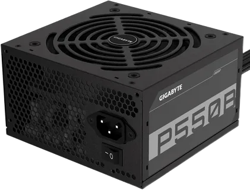

|

Блок питания преобразует сетевые 220V в стабильные постоянные 12V, 5V и 3.3V.
Классификация сертификатов 80 PLUS:
| Сертификат |
КПД под нагрузкой |
Класс сборки |
| 80 PLUS Bronze |
от 85% |
Бюджетные и офисные ПК |
| 80 PLUS Gold |
от 90% |
Оптимальные игровые ПК |
| 80 PLUS Platinum |
от 92% |
Мощные рабочие станции |
Советы:
|